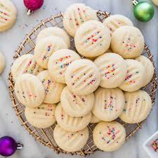

ShortBread Cookies

Description:
This classic shortbread cookie recipe makes rich, buttery, melt-in-your-mouth press cookies using just 4 simple
ingredients that you probably have in your pantry.
Ingredients
- 2 cups butter,softened
- 1 cup white sugar
- 2 teaspoons vanilla extract
- 4 cups all-purpose
Steps:
- Gather all ingredients
- Preheat the oven to 350 degrees
- Beat softened butter and sugar together in a large bowl with an electric mixer
- Stir in vanilla;add flour and mix well until combined
- Fill cookie press with dough and form cookies onto two ungreased cookie sheets, spacing them about 1 inches apart